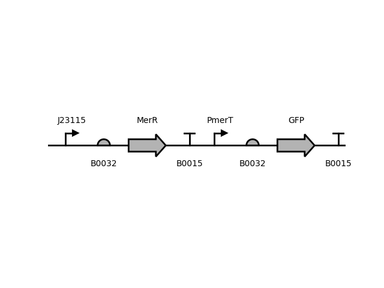
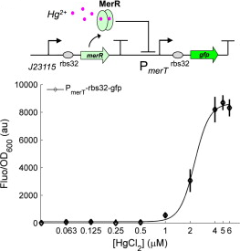
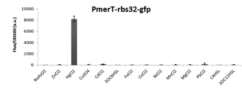

Mercury-inducible Promoter
PmerT
Data
| Parameter | Value | Unit |
|---|---|---|
| DR | 95 | - |
| High | 8652.82 | a.u. |
| Low | 89.82 | a.u. |
| Hill | 4.84 | - |
| Km | 2.267 | µM |
| Strain | TOP10 |
|---|---|
| Plasmid | pSB3K3 |
| ori | p15A |
| Resistance | Kan |
Circuit Context
(better resolution)
Description

This is a promoter repressed by MerR (heterologous), a protein which stops repression in the presence of mercury, characterized by Wang and colleagues in 2013 at the Imperial College London.
The part displayed here (sequences and data) is not its optimal iteration. It was chosen because of the characterization along other metal-inducible promoters, allowing comparison between them.
An improved version was achieved by Wang and colleagues in a later publication, by tuning receptor densities to modulate promoter leakiness and maximal activity
1
.
In 2019, Wan and colleagues
2
developed an ultrasensitive mercury biosensor with this part, by utilizing cascaded amplifying circuits. The approach produced a higher dynamic range and
sensitivity.
Orthogonality
This part was tested for cross-reactivity with other heavy metals, and was shown to be orthogonal.
Measurement
This data was measured by plate reader fluorescence, normalized by background and E.coli auto-fluorescence, and by OD 600. Cultivated in LB medium at 37°C, the measurements were taken 6h post-induction. Data represents the behaviour of the promoter in response to different concentrations of HgCl 2 .
Sequences
Promoter
ttccatatcgcttgactacgtacatgagtacggaagtaaggttacgctatccaatcc
MerR
atggaaaataatttggaaaacctgaccattggcgtttttgccaaggcggccggggtcaacgtggagacaatccgcttctatcagcgcaagggcctgttgcgggaaccggacaagccttacggcagcatccgccgctatggggaggcggacgtggttcgggtgaaattcgtgaaatcggcacagcggctggggttcagtctggacgagattgccgagctgttgcggctcgacgatggcacccactgcgaggaggccagcagcctggccgaacacaagctcaaggacgtgcgcgagaagatggccgacttggcgcgcatggaaaccgtgctgtctgaactcgtgtgcgcctgccatgcacgaaaggggaatgtttcctgcccgttgatcgcgtcactacagggcgaagcaggcctggcaaggtcagctatgccttag
Download
Reference
Wang, B., Barahona, M. & Buck, M. A modular cell-based biosensor using engineered genetic logic circuits to detect and integrate multiple environmental signals. Biosens. Bioelectron. 40, 368–376 (2013).
http://dx.doi.org/10.1016/j.bios.2012.08.011